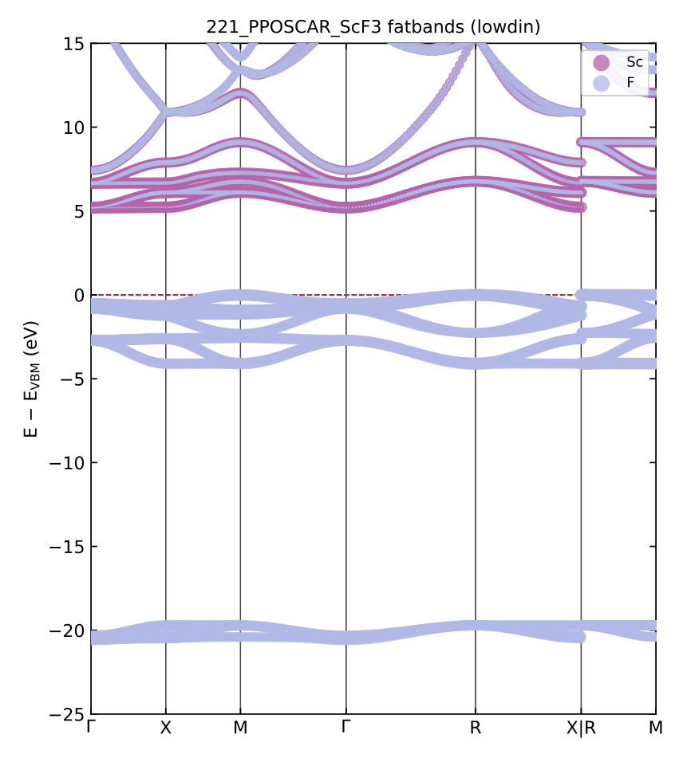

crystod (main command)#
The main command performs the SALC (symmetry-adapted linear combination)
analysis of crystal orbitals — no mode flag is needed. It also hosts the
crystal-orbital diagram (--diagram, with the band structure and DOS of the
same calculation), the interactive SALC viewer (--visualize) and the
star-of-k display (--star-of-k).
I want to … |
command |
|---|---|
know which irreps an orbital spans at every k point |
|
know which orbitals may hybridize at one k point |
|
draw the crystal-orbital diagram |
|
see the SALCs in 3D |
|
list the arms of a star of k |
|
1. Theoretical background#
See also
Theory: 1. Theoretical background — the
representation matrices, the character/reduction formula and the projection
operator on which every command of this page (and of crystod-group /
crystod-mag) is built.
2. Irreps of SALC#
Example directory: example/02_salc (testsuite section 2)
Decompose the crystal orbitals built from a selected element/orbital into the irreducible representations of the little group at each special k point:
crystod -c example/test_POSCARs/221_PPOSCAR_SrTiO3 --element Ti --orbital d
* Crystal Orbitals *
k point (primitive): GM [0.0, 0.0, 0.0]
little group of k : Pm-3m (221)
irreps : 1.0 [GM3+(2)] + 1.0 [GM5+(3)]
k point (primitive): R [0.5, 0.5, 0.5]
little group of k : Pm-3m (221)
irreps : 1.0 [R3-(2)] + 1.0 [R4-(3)]
k point (primitive): X [0.0, 0.5, 0.0]
little group of k : P4/mmm (123)
irreps : 1.0 [X2-(1)] + 1.0 [X3-(1)] + 1.0 [X4-(1)] + 1.0 [X5-(2)]
k point (primitive): M [0.5, 0.5, 0.0]
little group of k : P4/mmm (123)
irreps : 1.0 [M1+(1)] + 1.0 [M3+(1)] + 1.0 [M4+(1)] + 1.0 [M5+(2)]
When --kpoint is omitted, all special k points of the space group are analyzed.
Any arm of a special-point star is labeled correctly.
--show-irrep-table additionally prints the little-group character table at the
selected k point.
3. Crystal-orbital diagrams#
Example directory: example/03_hybridization (testsuite section 3)
Analyze the hybridization between selected atomic orbitals (ELEMENT_ORBITAL pairs):
crystod -c example/test_POSCARs/221_PPOSCAR_ScF3 --atomic-orbital Sc-d F-p --kpoint 0.5 0.5 0.5
* Result *
R1+(1): F(p)
R1-(1):
R2+(1):
R2-(1):
R3+(2): Sc(d) F(p)
R3-(2):
R4+(3): F(p)
R4-(3):
R5+(3): Sc(d) F(p)
R5-(3):
For each little-group irrep at the k point, the orbitals that transform as the relevant irreps are listed — orbitals sharing a line are symmetry-allowed to hybridize. We can see that Sc-d and F-p states can be hybridized when they are ruled by the irreps of R3+ and R5+.
Quantitative crystal-orbital diagrams using extended-Hückel engine (--diagram)#
--diagram draws the quantitative crystal orbital diagram (COD) — the
crystalline analogue of the molecular-orbital diagram of
crystod-mol --diagram --ao-left ... --ao-right ....
--co-left/--co-right split the crystal into two fragment sublattices by
chemical formula (every atom must belong to one side; a count such as O3
validates against the primitive cell).
Each fragment carries its full-electron basis — every core and valence
shell of every atom: core shells with Slater-rule Slater-type orbital (STO)
exponents, valence shells with the extended-Hückel parameters, and the level
energies from the archived neutral-atom PySCF calculations
(reference/atomic_level_{El}, one Hartree-Fock/def2-svp run per element).
Each fragment then feels the removed sublattice as a point-charge lattice
with the formal oxidation states (guessed with pymatgen; override with
--oxidation Sr=+2 Ti=+4 O=-2): the Sc fragment of ScF3 sits in the field
of the F lattice with Q = -1, the F3 fragment in the field of the Sc
lattice with Q = +3 — the Madelung ligand field of the pre-bonding states:
crystod --diagram -c 221_PPOSCAR_ScF3 --co-left Sc --co-right F3
# -> CrystOD_221_PPOSCAR_ScF3.html
The terminal prints, per k point, the two fragment columns and the crystal orbitals with their irrep, degeneracy, occupation and composition — at R the textbook perovskite pattern:
* k point R (1/2,1/2,1/2) *
Sc : ... Sc 3d R5+ (-9.08), Sc 3d R3+ (-7.62), ...
F3 : ... F 2p R1+ (-19.67), F 2p R3+ (-19.33), F 2p R5+ (-17.56), F 2p R4+ (-17.30)
crystal :
...
R3+ #1 -19.46 eV x2 4e F 2p R3+ 93.5% Sc 3d R3+ 6.5%
R5+ #1 -17.70 eV x3 6e F 2p R5+ 95.4% Sc 3d R5+ 4.6%
R4+ #1 -17.30 eV x3 6e F 2p R4+ 100.0%
R5+ #2 -8.18 eV x3 Sc 3d R5+ 95.4% F 2p R5+ 4.6%
R3+ #2 -5.21 eV x2 Sc 3d R3+ 93.5% F 2p R3+ 6.5%
At every special k point CrystOD symmetry-adapts the Bloch orbitals of both
fragments, evaluates every intra- and inter-fragment overlap as an exact STO
lattice sum, adds the point-charge ligand field and solves the resulting
Wolfsberg-Helmholz eigenvalue problem. Fragment orbitals sharing an irrep
split into bonding and antibonding crystal orbitals; orbitals without a
same-irrep partner stay rigorously nonbonding — the COD mixing rule. In the
table above the eg-derived R3+ pair splits strongly (σ / σ*), the t2g-derived
R5+ pair weakly (π / π*), and R4+ has no Sc partner at all and remains
100 % F 2p.
The written HTML is the diagram below — the live output of the command, one energy diagram per k point (the buttons switch k), fragment | crystal | fragment columns with correlation lines weighted by the composition, electron arrows and HOMO/LUMO markers. Hover any level for its wave-function sketch (all atomic-orbital components on the k-commensurate supercell, VESTA-style +/- lobes, drag-rotatable):
Open the ScF3 crystal-orbital diagram full-screen
Options: --electrons N overrides the electron count (default: all electrons
of the neutral atoms); --kpoint GM restricts the diagram to one special
point; --conventional draws the hover sketches in the conventional cell;
--output/--tolerance as usual. Elements H-Bi of the standard
extended-Hückel tables are parameterized.
The page itself keeps every k point, and the one it opens on can be chosen in
the URL — CrystOD_POSCAR.html?k=R (or #R) — which is what the embedded
diagram above does. That makes a single file embeddable anywhere in the star
without regenerating it; the k buttons still switch freely afterwards.
See also
Theory: How the orbital diagrams are computed — the symmetry-adapted Bloch basis, the exact STO lattice sums, the Ewald point-charge ligand field, the overlap-catastrophe cut-off and their validation.
Quantitative crystal-orbital diagrams using PySCF (--diagram --pyscf)#
--pyscf replaces the extended-Hueckel model by three periodic PySCF
calculations that share one atomic-orbital space — the crystalline
counterpart of crystod-mol --diagram --pyscf:
crystod --diagram -c 221_PPOSCAR_ScF3 --pyscf --co-left Sc --co-right F3
crystod --diagram -c 221_PPOSCAR_SrTiO3 --pyscf --co-left SrTi --co-right O3
# -> CrystOD_{cell}_pyscf.html
calculation |
real atoms |
point charges |
|---|---|---|
left fragment |
the |
the right sublattice |
right fragment |
the |
the left sublattice |
crystal |
everything |
none |
The removed sublattice stays in the basis as ghost atoms and at the same
time acts on the fragment as its formal-charge point lattice
(--oxidation Sc=+3 F=-1 overrides the guessed oxidation states), so all
three calculations span one AO space (counterpoise-consistent) and each
fragment is one sublattice in the Madelung field of the other — the
electronic state before chemical bond formation. Every cell is neutral, but
each calculation still pins its own cell-averaged potential, so the raw
columns are offset by one rigid, k-independent constant each; the diagram
removes it by deep-level (XPS-style) alignment against the deepest
chemically inert fragment level (printed with anchor, purity and k-spread),
and --no-align keeps the raw references instead.
Crystal-orbital lines are colored by bonding character (blue = bonding,
black = nonbonding, red = antibonding) from the COOP-style left-right overlap
population of each eigenstate, and the fragment columns are drawn in the VESTA
color of each level’s dominant element. Degeneracies are exact by
construction: all displayed levels are re-diagonalized from the group-averaged
Fock, whose invariance under the AO representation is verified against PySCF’s
own overlap matrix (D+ S D = S, residual printed per k point).
Main options: --basis (default gth-dzvp-molopt-sr), --pseudo (default
gth-pbe), --xc (default pbe, or hf), --ke-cutoff (default 200
Hartree), --kmesh (default round(8 A / |a_i|)), --max-l L (drop basis
shells above l = L), --projection lowdin|mulliken, --no-ghost,
--no-symmetrize, and --chk (below). The same-irrep resonance-integral
tables are written to <output-stem>_coupling.txt next to the HTML.
--onsite — the single-Hamiltonian diagram. Only the crystal SCF runs, and
the fragment columns are the per-(element, shell) on-site multiplets of the
converged crystal Fock — one level per induced irrep, no point charges and no
alignment step, so a crystal level’s drop or rise against its parent is the
orbital interaction:
crystod --diagram -c 225_PPOSCAR_NaCl --pyscf --onsite --co-left Na --co-right Cl \
--kpoint X --kmesh 1 1 1 --ke-cutoff 80
See also
Theory: How the orbital diagrams are computed
— the counterpoise (ghost-atom) construction, the neutrality bookkeeping, how
the deep-level alignment anchor is chosen, and why --onsite takes the
fragment columns from the crystal Fock.
Band structure, fatbands and DOS (--band, --dos)#
Before zooming into the special k points with the diagram, read the whole band
structure. --band diagonalizes the recorded density matrix
non-self-consistently along the automatic seekpath path (the VASP-style
two-step; with a matching --chk no new SCF is run), and --fatband adds the
element- and (element, l)-projected versions:
crystod --band --fatband --pyscf -c 221_PPOSCAR_ScF3 --co-left Sc --co-right F3 \
--kmesh 2 2 2 --ke-cutoff 80 --max-l 2 --chk ScF3.chk
k path : GAMMA-X-M-GAMMA-R-X | R-M (242 points, 41 per leg)
non-self-consistent bands on 242 k points ...
VBM +0.000 eV at R, CBM +5.199 eV at GM -> gap 5.199 eV on this path (mesh gap 5.199 eV)
Band structure written to BAND_221_PPOSCAR_ScF3.pdf, BAND_221_PPOSCAR_ScF3_fatband.pdf, BAND_221_PPOSCAR_ScF3_fatband_Sc.pdf, BAND_221_PPOSCAR_ScF3_fatband_F.pdf, BAND_221_PPOSCAR_ScF3.csv, BAND_221_PPOSCAR_ScF3.txt
{kind=link}

BAND_221_PPOSCAR_ScF3_fatband.pdf: the element-projected fatband overview in
VESTA colors (dot size = projected weight). The F 2p valence manifold just
below 0 eV and the isolated F 2s band near −20 eV carry no Sc weight at all,
while the conduction bands from +5 eV up pick up the Sc (red) character — the
d0 insulator whose R-point σ/σ*, π/π* splitting the diagram above resolves
level by level. Bands are referenced to the VBM (--align absolute keeps the
raw scale), and the plotted window follows --window LO HI.#
--dos is the k-integrated companion: Gaussian-broadened total DOS, element x
angular-momentum PDOS, and the partial charges in both conventions, on a dense
--dos-kmesh (default 8x8x8):
crystod --dos --pyscf -c 221_PPOSCAR_ScF3 --co-left Sc --co-right F3 \
--kmesh 2 2 2 --ke-cutoff 80 --max-l 2 --chk ScF3.chk
* Lowdin partial charges (sum of populations = 32.0000 electrons, expected 32) *
Sc0: population 10.9960 net charge +0.004 (3s 1.641 4s 0.336 5s 0.140 3p 5.715 4p 0.878 3d 1.434 4d 0.852)
F1: population 7.0013 net charge -0.001 (2s 1.523 3s 0.070 2p 5.203 3p 0.197 3d 0.008)
* Mulliken partial charges (sum of populations = 32.0000 electrons, expected 32) *
Sc0: population 9.4266 net charge +1.573 (3s 1.983 4s 0.054 5s 0.038 3p 5.987 4p 0.334 3d 1.064 4d -0.033)
F1: population 7.5245 net charge -0.524 (2s 1.948 3s -0.006 2p 5.603 3p -0.022 3d 0.002)
(an atomic partition of a continuous density is a convention: with this diffuse basis Loewdin tends toward neutral atoms, Mulliken keeps the ionic picture)
VBM +0.000 eV, CBM +5.199 eV, gap 5.199 eV (Fermi filling on the 8x8x8 mesh)
DOS plot written to DOS_221_PPOSCAR_ScF3.pdf
Both write a PDF, a CSV of every curve (or every band energy and weight) and a
TXT summary, both accept --onsite (neither needs the fragment densities), and
both share one checkpoint with the diagram runs.
Restart files (--chk, --chk-info)#
--chk FILE is the WAVECAR analogue of the PySCF modes: the converged density
matrices and the defining parameters are saved after the SCFs, and a rerun with
the file present skips all three SCFs. The parameters are verified first, and a
mismatch aborts naming the offending option — so a diagram, a band structure
and a DOS of the same system cost exactly one SCF set in total.
--chk-info FILE prints what a checkpoint holds, ending with a ready-to-paste
option string that reproduces it:
crystod --chk-info ScF3.chk
* ScF3.chk -- CrystOD SCF checkpoint (WAVECAR-style restart, 0.8 MB) *
structure : Sc + F3, 4 atoms/cell, a = 4.0696 / 4.0696 / 4.0696 A
method : PBE / gth-dzvp-molopt-sr / gth-pbe, ke_cutoff 80 Ha, k-mesh 2x2x2, max_l 2
electrons : 32 per cell (oxidation F=-1 Sc=+3)
fragments : left Sc | right F3, counterpoise ghosts
contents : full three-SCF run; densities on 8 k points x 58 AOs
energies : mo -119.66022723 Ha | left -46.60996096 Ha | right -72.41588868 Ha
smearing : right carried Fermi smearing when written
reuse with: --co-left Sc --co-right F3 --xc pbe --basis gth-dzvp-molopt-sr --pseudo gth-pbe --kmesh 2 2 2 --ke-cutoff 80 --max-l 2 --oxidation F=-1 Sc=+3 --chk ScF3.chk
4. Star of k#
Example directory: example/04_star_of_k (testsuite section 4)
Display the star of k: the set of inequivalent k points generated from a given
k point by the space-group rotations (k' = k R, modulo reciprocal lattice):
crystod --star-of-k -c example/test_POSCARs/221_PPOSCAR_ScF3 --kpoint 0.5 0.5 0
crystod --star-of-k -c example/test_POSCARs/221_PPOSCAR_ScF3 --kpoint M
* Space group *
Pm-3m (221)
* k point (primitive) *
M [0.5, 0.5, 0.0]
* Star of k *
|G| = 48, |G_k| = 16, |star of k| = 3
arm 1: k = [+0.5, +0.5, +0] (representative: 1)
arm 2: k = [+0.5, +0, +0.5] (representative: 3^+_111)
arm 3: k = [+0, +0.5, +0.5] (representative: 2_101)
The output shows |G|, the little co-group order |G_k|, |star of k|, and each
arm with its coset-representative operation in Seitz notation.
The star of q is also displayed automatically in crystod-phonon --modulation
for each selected q point, which is useful when combining arms of the same star
in multi-q modulations.
5. SALC basis visualization (--visualize)#
Example directory: example/05_visualized_basis (testsuite section 5)
Build the SALCs of a selected element/orbital at a k point, print the irreducible decomposition and per-atom SALC coefficients, and export an interactive 3D HTML visualization:
Example 1: Sc d orbitals of ScF3 at the R point#
crystod --visualize -c 221_PPOSCAR_ScF3 --element Sc --orbital d --bond Sc F 2.5 --real-coefficient
# -> SALC_221_PPOSCAR_ScF3_Sc_d_{GM,X,M,R}.html
* k point (primitive) *
R [0.5, 0.5, 0.5]
* Irreducible Decomposition *
1.0 [R3+(2)] + 1.0 [R5+(3)]
* SALC basis functions (irrep-grouped) *
Mode Space 1: irrep = R3+(2), dimension = 2
component 1:
Sc1 (atom 0): d_z2: +1.0000
component 2:
Sc1 (atom 0): d_x2-y2: +1.0000
Mode Space 2: irrep = R5+(3), dimension = 3
component 1:
Sc1 (atom 0): d_xy: +1.0000
component 2:
Sc1 (atom 0): d_yz: +1.0000
component 3:
Sc1 (atom 0): d_xz: +1.0000
Open the ScF3 SALC viewer full-screen
The viewer above is the live output of the command;
the commensurate 2x2x2 supercell is built and the Bloch phase alternates the
lobe signs from cell to cell (the Sc d SALCs at R decompose as
R3+(2) + R5+(3)). Click any row of the SALC table in the sidebar to switch
the displayed basis vector, toggle the ScF6 polyhedra, and drag to rotate.
Note that the option --real-coefficient transforms the basis into physically irreducible representation.
Additionally, the option --bond Sc F 2.5 draws the coordinated polyhedra considering chemical bond Sc-F shorter than 2.5 Angstrom.
Without --kpoint one page per special k point is written, auto-named
SALC_{structure}_{element}_{orbital}_{kpoint}.html; with an explicit
--kpoint the shorter SALC_{element}_{orbital}_{kpoint}.html is used
(--output overrides either).
Example 2: Ce f orbitals of CeO2 in the conventional cell (--conventional)#
crystod --visualize -c 225_PPOSCAR_CeO2 --element Ce --orbital f --kpoint 0 0 0 --bond Ce O 3 --real-coefficient --conventional
CeO2 is face-centred (Fm-3m), so its primitive cell is the small rhombohedral
one — hardly the picture one has in mind for fluorite. --conventional
switches the display to the cubic conventional cell (four formula units, the
familiar CeO8 cube arrangement) while the SALC coefficients themselves are
unchanged. The corner compass then shows both lattices: the primitive
vectors as short pastel arrows (aprim, bprim,
cprim — the face diagonals) and the conventional vectors of the
displayed cell as full-color arrows (aconv, bconv,
cconv — the cubic axes):
Open the CeO2 conventional-cell SALC viewer f ull-screen
--real-coefficientre-combines degenerate SALC components into real-coefficient form whenever the projected space is closed under complex conjugation (real-type irreps at k = -k points). For example, the GM3+ (Eg) SALCs of Sc_d, which are otherwise produced as(d_z2 +/- i d_x2-y2)/sqrt(2), becomed_z2andd_x2-y2. The spanned space is unchanged; only the unitary basis choice within the irrep space is rotated.--mode-index Nrestricts the output to one irrep-grouped mode space (1-based).--bond EL1 EL2 MAXis repeatable, so several bond types can be drawn at once.
The viewer layout is modeled after the phonon website by Henrique Miranda (github.com/henriquemiranda/phononwebsite, BSD-3-Clause) — CrystOD imitates its sidebar-plus-viewport design (no code is copied; the 3D rendering uses plotly).
Extended-Hückel eigen-levels in the viewer (bare --visualize)#
--visualize without --element/--orbital shows eigen-levels
instead of the basis: it runs the same symmetry + extended-Hückel engine
as crystod --diagram and writes one SALC-viewer page per special k
point — the energy levels inside the default window (HOMO−15 ..
LUMO+10 eV; --window opens the deep shells), each row a degenerate
partner, the clicked row rendering the eigenvector’s wave function:
crystod --visualize -c 221_PPOSCAR_ScF3
crystod --visualize -c 221_PPOSCAR_ScF3 --sublattice Sc --kpoint R --diagonalize
# -> SALC_eht_<structure>_<crystal|fragment>_<k>.html
No SCF and no basis options — the full-electron STO basis, the archived
atomic levels and the point-charge ligand field are all tabulated, so the
bare command works out of the box (--oxidation overrides the guessed
point charges, --electrons the filling). --sublattice Sc shows the
pre-bonding Sc-sublattice block of the shared Hamiltonian instead of the
crystal; all three views sit on ONE energy reference by construction (a
single Hamiltonian — no alignment step exists here).
PySCF eigen-levels in the viewer (--visualize --pyscf)#
The SALCs above are the symmetry-adapted basis — the states before any
Hamiltonian. With --pyscf the same page shows the actual PySCF
eigenstates, either of one fragment sublattice (the pre-bonding states
in the removed sublattice’s point-charge field, exactly the
--diagram --pyscf columns) or of the full crystal (the states after
bonding):
crystod --visualize --pyscf -c 221_PPOSCAR_ScF3 --sublattice Sc --bond Sc F 3 --real-coefficient --chk scf3.chk
crystod --visualize --pyscf -c 221_PPOSCAR_ScF3 --sublattice F3 --bond Sc F 3 --real-coefficient --chk scf3.chk
crystod --visualize --pyscf -c 221_PPOSCAR_ScF3 --bond Sc F 3 --real-coefficient --chk scf3.chk
No --element/--orbital/--kpoint are needed: the special k points come
from the space group automatically (one page per k point; --kpoint GM
restricts the output). The SALC-basis table becomes Mode | Irrep |
Comp. | Energy (eV) — one row per degenerate partner, level labels in
the diagram convention (GM4- #2, Sc 3d R3+), energies on the shared
deep-level-aligned scale, so the Sc, F3 and crystal pages are directly
comparable (--no-align keeps the raw references). Clicking a row draws
the eigenvector’s wave function on the k-commensurate display cell (or the
conventional cell with --conventional), with the usual VESTA-style bonds
and polyhedra. With a shared --chk the three commands above pay the SCF
once (~5 s per page set afterwards).
Two options control what the sketches show:
--diagonalizecanonicalizes the degenerate partners (RREF), so the arbitrary unitary mixture the SCF returns becomes axis-aligned — the R5+ t2g triplet of ScF3 turns into pure d_xy / d_yz / d_xz; energies are unchanged.--valence-onlydrops semicore shells (occupied fragment bands more than 12 eV below the crystal VBM — Sc 3s, Sc 3p, F 2s here; detected automatically and printed) from the drawn wave functions. Their admixture in a valence level is an on-site orthogonality tail whose radial node makes a genuinely bonding σ level look antibonding; levels a semicore shell dominates keep it.
See also
Theory: Why a valence level can look antibonding
— the orthogonality tail against a semicore band, the ⟨r⟩ scale separation
behind --valence-only, and the lobe-size calibration to the Löwdin
populations.